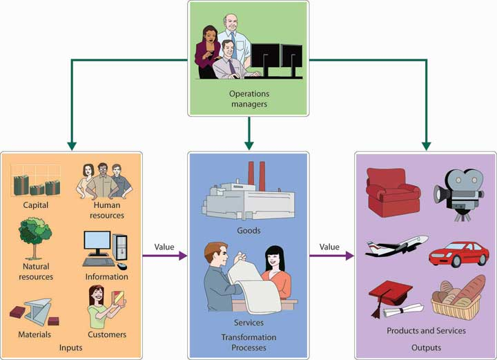

The product development process can be complex and lengthy. It took sixteen years for Bob Montgomery and others at his company to develop the PowerSki Jetboard, and this involved thousands of design changes. It seemed worth it: the Jetboard, an exciting, engine-propelled personal watercraft that’s a cross between a high-performance surfboard and a competition water-ski/wakeboard, received extensive media attention and earned rave reviews. It was showered with honors, including Time magazine’s “Best Invention of the Year” award. Stories about the Jetboard appeared in more than fifty magazines around the world, and it appeared in several movies, in over twenty-five TV shows, and on YouTube.Jetboard, http;//www,jetboard.com (accessed October 19, 2011); Liquid Blue Features PowerSki Jetboards, YouTube video, 6:50, posted by “powerskijetboard,” March 13, 2008, http://www.youtube.com/watch?v=pyfIXBxC0_A (accessed November 1, 2011); Jetboard, “Publicity,” http://jetboard.com/marketingpublicity.html (accessed November 1, 2011). One reviewer of the Jetboard exclaimed, “Up, up and away. PowerSki's the closest you'll get to being Superman on the water. With 40 hp under your toes, the 100-pound board literally flies. You supply the cape.”Cliff Gromer, “PowerSki Jetboard,” Popular Mechanics, March 2000, http://www.popularmechanics.com/outdoors/adventures/1277611.html (accessed June 1, 2008).
Montgomery and his team at PowerSki enjoyed taking their well-deserved bows for the job they did designing the product. But having a product was only the beginning for the company. The next step was developing a system that would produce high-quality Jetboards at reasonable prices. Before putting this system in place, PowerSki managers had to address several questions: What kind of production process should they use to make the Jetboards? How large should their production facilities be, and where should they be located? How should the plant be laid out? Should every component be made in-house, or should some be furnished by subcontractors? Where should they buy the materials they needed to build Jetboards? What systems would they need to ensure that production was as efficient as possible and that quality standards were maintained? Answering these questions helped PowerSki set up a manufacturing system through which it could accomplish the most important task that it had set for itself: efficiently producing quality Jetboards.
Like PowerSki, every organization—whether it produces goods or provides services—sees Job 1 as furnishing customers with quality products. Thus, to compete with other organizations, a company must convert resources (materials, labor, money, information) into goods or services as efficiently as possible. The upper-level manager who directs this transformation process is called an operations manager. The job of operations management (OM)Management of the process that transforms resources into products., then, consists of all the activities involved in transforming a product idea into a finished product, as well as those involved in planning and controlling the systems that produce goods and services. In other words, operations managers manage the process that transforms inputs into outputs. Figure 11.1 "The Transformation Process" illustrates this traditional function of operations management.
Figure 11.1 The Transformation Process
In the rest of this chapter, we’ll discuss the major activities of operations managers. We’ll start by describing the role that operations managers play in the various processes designed to produce goods and offer services. Next, we’ll look at the production of goods in manufacturing firms; then, we’ll describe operations management activities in companies that provide services. We’ll wrap up the chapter by explaining the role of operations management in such processes as quality control and outsourcing.
Like PowerSki, all manufacturers set out to perform the same basic function: to transform resources into finished goods. To perform this function in today’s business environment, manufacturers must continually strive to improve operational efficiency. They must fine-tune their production processes to focus on quality, to hold down the costs of materials and labor, and to eliminate all costs that add no value to the finished product. Making the decisions involved in the effort to attain these goals is the job of the operations manager. That person’s responsibilities can be grouped as follows:
Let’s take a closer look at each of these responsibilities.
The decisions made in the planning stage have long-range implications and are crucial to a firm’s success. Before making decisions about the operations process, managers must consider the goals set by marketing managers. Does the company intend to be a low-cost producer and to compete on the basis of price? Or does it plan to focus on quality and go after the high end of the market? Perhaps it wants to build a reputation for reliability. What if it intends to offer a wide range of products? To make things even more complicated, all these decisions involve trade-offs. Upholding a reputation for reliability isn’t necessarily compatible with offering a wide range of products. Low cost doesn’t normally go hand in hand with high quality.
With these factors in mind, let’s look at the specific types of decisions that have to be made in the production planning process. We’ve divided these decisions into those dealing with production methods, site selection, facility layout, and components and materials management.
The first step in production planning is deciding which type of production process is best for making the goods that your company intends to manufacture. In reaching this decision, you should answer such questions as the following:
One way to appreciate the nature of this decision is by comparing three basic types of processes or methods: make-to-order, mass production, and mass customization. The task of the operations manager is to work with other managers, particularly marketers, to select the process that best serves the needs of the company’s customers.
At one time, most consumer goods, such as furniture and clothing, were made by individuals practicing various crafts. By their very nature, products were customized to meet the needs of the buyers who ordered them. This process, which is called a make-to-order strategyProduction method in which products are made to customer specification., is still commonly used by such businesses as print or sign shops that produce low-volume, high-variety goods according to customer specifications.
By the early twentieth century, however, a new concept of producing goods had been introduced: mass production (or make-to-stock strategy)Production method in which high volumes of products are made at low cost and held in inventory in anticipation of future demand. is the practice of producing high volumes of identical goods at a cost low enough to price them for large numbers of customers. Goods are made in anticipation of future demand (based on forecasts) and kept in inventory for later sale. This approach is particularly appropriate for standardized goods ranging from processed foods to electronic appliances.
But there’s a disadvantage to mass production: customers, as one contemporary advertising slogan puts it, can’t “have it their way.” They have to accept standardized products as they come off assembly lines. Increasingly, however, customers are looking for products that are designed to accommodate individual tastes or needs but can still be bought at reasonable prices. To meet the demands of these consumers, many companies have turned to an approach called mass customizationProduction method in which fairly high volumes of customized products are made at fairly low prices., which (as the term suggests) combines the advantages of customized products with those of mass production.
This approach requires that a company interact with the customer to find out exactly what the customer wants and then manufacture the good, using efficient production methods to hold down costs. One efficient method is to mass-produce a product up to a certain cut-off point and then to customize it to satisfy different customers.
The list of companies devoting at least a portion of their operations to mass customization is growing steadily. One of the best-known mass customizer is Nike, which has achieved success by allowing customers to configure their own athletic shoes, apparel, and equipment through Nike’s iD program. The Web has a lot to do with the growth of mass customization. Levi’s, for instance, lets a woman find a pair of perfect fitting jeans by going through an online fitting process that first identifies her “curve” type: slight (straight figure), demi (evenly proportioned), bold (curvy figure, which experiences waist gapping in the back), and supreme (curviest shape, which needs a higher rise in the back). Oakley offers customized sunglasses, goggles, watches, and backpacks, while Mars, Inc. can make M&M’s in any color the customer wants (say, school colors) as well as add text and pictures to the candy.See these websites for examples of customized products: Nike (http://nikeid.nike.com/nikeid/index.jsp), Levi (http://us.levi.com/shop/index.jsp?categoryId=4370093), Oakley (http://www.oakley.com/custom), and Mar’s M&M’s (http://www.mymms.com/utility.aspx?src=) (accessed November 2, 2011).
Naturally, mass customization doesn’t work for all types of goods. Most people don’t care about customized detergents or paper products (although a customized Kleenex tissue box with your picture on it and a statement that says, “go ahead…cry over me!” might come in handy after a relationship breakup with your significant other.Anita Windisman, “Personalized Packaging: Kleenex Offers Customizable Tissue Boxes,” One of a Kind Publishing, Inc., January 3, 2008, http://blogs.oneofakindpublishing.com/index.php?/archives/77-Personalized-Packaging-Kleenex-Offers Customizable-Tissue-Boxes.html (accessed November 1, 2011).) And while many of us like the idea of customized clothes, footwear, or sunglasses from Levi’s, Nike, or Oakley, we often aren’t willing to pay the higher prices they command.
After selecting the best production process, operations managers must then decide where the goods will be manufactured, how large the manufacturing facilities will be, and how those facilities will be laid out.
In choosing a location, managers must consider several factors:
Managers rarely find locations that meet all these criteria. As a rule, they identify the most important criteria and aim at satisfying them. In deciding to locate in San Clemente, California, for instance, PowerSki was able to satisfy three important criteria: (1) proximity to the firm’s suppliers, (2) availability of skilled engineers and technicians, and (3) favorable living conditions. These factors were more important than operating in a low-cost region or getting financial incentives from local government. Because PowerSki distributes its products throughout the world, proximity to customers was also unimportant.
Now that you know where you’re going to locate, you have to decide on the quantity of products that you’ll produce. You begin by forecasting demand for your product. As we discussed in Chapter 10 "Product Design and Development", forecasting isn’t easy. To estimate the number of units that you’re likely to sell over a given period, you have to understand the industry that you’re in and estimate your likely share of the market by reviewing industry data and conducting other forms of research.
Once you’ve forecasted the demand for your product, you can calculate the capacityMaximum number of products that a facility can produce over a given period under normal working conditions. requirements of your production facility—the maximum number of goods that it can produce over a given time under normal working conditions. In turn, having calculated your capacity requirements, you’re ready to determine how much investment in plant and equipment you’ll have to make, as well as the number of labor hours required for the plant to produce at capacity.
Like forecasting, capacity planning is difficult. Unfortunately, failing to balance capacity and projected demand can be seriously detrimental to your bottom line. If you set capacity too low (and so produce less than you should), you won’t be able to meet demand, and you’ll lose sales and customers. If you set capacity too high (and turn out more units than you should), you’ll waste resources and inflate operating costs.
(AACSB) Analysis
Two former surfers invented a material for surfboards that’s lighter and stronger than anything manufacturers now use. They have received funding to set up a production facility, and they want you to help them select a location. In addition to your recommendation, identify the factors that you considered in reaching your decision.
(AACSB) Analysis
Compare and contrast three common types of production processes: make-to-order, make-to-stock, and mass customization. What are the advantages and disadvantages of each? Why are more companies devoting at least a portion of their operations to mass customization? Identify three goods that could probably be adapted to mass customization and three that probably couldn’t.
The next step in production planning is deciding on plant layoutArrangement in a facility of equipment, machinery, and people to make a production process as efficient as possible.—how equipment, machinery, and people will be arranged to make the production process as efficient as possible. In this section, we’ll examine four common types of facility layouts: process, product, cellular, and fixed position.
The process layoutLayout that groups together workers or departments that perform similar tasks. groups together workers or departments that perform similar tasks. Goods in process (goods not yet finished) move from one workstation to another. At each position, workers use specialized equipment to perform a particular step in the production process. To better understand how this layout works, we’ll look at the production process at the Vermont Teddy Bear Company. Let’s say that you just placed an order for a personalized teddy bear—a “hiker bear” with khaki shorts, a white T-shirt with your name embroidered on it, faux-leather hiking boots, and a nylon backpack with sleeping bag. Your bear begins at the fur-cutting workstation, where its honey-brown “fur” coat is cut. It then moves to the stuffing and sewing workstation to get its insides and have its sides stitched together. Next, it moves to the dressing station, where it’s outfitted with all the cool clothes and gear that you ordered. Finally, it winds up in the shipping station and starts its journey to your house. For a more colorful “Online Mini-Tour” of this process, log on to the Vermont Teddy Bear Web site at http://www.vermontteddybear.com/Static/Tour-Welcomestation.aspx (or see Figure 11.3 "Process Layout at Vermont Teddy Bear Company").
Figure 11.3 Process Layout at Vermont Teddy Bear Company

In a product layoutLayout in which products are produced by people, equipment, or departments arranged in an assembly line., high-volume goods are produced efficiently by people, equipment, or departments arranged in an assembly line—that is, a series of workstations at which already-made parts are assembled. Just Born, a candy maker located in Bethlehem, Pennsylvania, makes a product called Marshmallow Peeps on an assembly line. First, the ingredients are combined and whipped in huge kettles. Then, sugar is added for color. At the next workstation, the mixture—colored warm marshmallow—is poured into baby-chick–shaped molds carried on conveyor belts. The conveyor-belt parade of candy pieces then moves forward to stations where workers add eyes or other details. When the finished candy reaches the packaging area, it’s wrapped for shipment to stores around the world. To take an online tour of the Marshmallow Peeps production process, log on to the Just Born Web site at http://www.justborn.com/get-to-know-us/our-factory (or see Figure 11.4 "Product Layout at Just Born, Inc.").
Figure 11.4 Product Layout at Just Born, Inc.

Both product and process layouts arrange work by function. At the Vermont Teddy Bear Company, for example, the cutting function is performed in one place, the stuffing-and-sewing function in another place, and the dressing function in a third place. If you’re a cutter, you cut all day; if you’re a sewer, you sew all day: that’s your function. The same is true for the production of Marshmallow Peeps at Just Born: if your function is to decorate peeps, you stand on an assembly line and decorate all day; if your function is packing, you pack all day.
Arranging work by function, however, isn’t always efficient. Production lines can back up, inventories can build up, workers can get bored with repetitive jobs, and time can be wasted in transporting goods from one workstation to another. To counter some of these problems, many manufacturers have adopted a cellular layoutLayout in which teams of workers perform all the tasks involved in building a component, group of related components, or finished product., in which small teams of workers handle all aspects of building a component, a “family” of components, or even a finished product. Each team works in a small area, or cell, equipped with everything that it needs to function as a self-contained unit. Machines are sometimes configured in a U-shape, with people working inside the U. Because team members often share duties, they’re trained to perform several different jobs. Teams monitor both the quantity and the quality of their own output. This arrangement often results in faster completion time, lower inventory levels, improved quality, and better employee morale. Cellular manufacturing is used by large manufacturers, such as Boeing, Raytheon, and Pratt & Whitney,Wayne Chaneski, “ Cellular Manufacturing Can Help You,” Modern Machine Shop, August 1, 1998, http://www.mmsonline.com/columns/cellular-manufacturing-can-help-you (accessed November 1, 2011). as well as by small companies, such as Little Enterprise, which makes components for robots.“Better Production—Manufacturing Cell Boosts Profits and Flexibility,” Modern Machine Shop Magazine, May 2001, http://www.mmsonline.com/articles/manufacturing-cell-boosts-profits-and-flexibility (accessed November 2, 2011), Little Enterprises, Inc., http://www.littleent.com/industries.html (accessed November 2, 2011). Figure 11.5 "Cellular Layout" illustrates a typical cellular layout.
Figure 11.5 Cellular Layout

It’s easy to move teddy bears and marshmallow candies around the factory while you’re making them, but what about airplanes or ships? In producing large items, manufacturers use fixed-position layoutLayout in which workers are moved to the product, which stays in one place. in which the product stays in one place and the workers (and equipment) go to the product. This is the arrangement used by General Housing Corporation in constructing modular homes. Each house is constructed at the company’s factory in Bay City, Michigan, according to the customer’s design. Because carpenters, electricians, plumbers, and others work on each building inside the climate-controlled factory, the process can’t be hindered by weather. Once it’s done, the house is transported in modules to the owner’s building site and set up in one day. For a closer view of General Housing Corporation’s production process, go to the General Housing Web site at http://www.genhouse.com.
(AACSB) Analysis
As purchasing manager for a company that flies corporate executives around the world, you’re responsible for buying everything from airplanes to onboard snacks. You plan to visit all the plants that make the things you buy: airplanes, passenger seats, TV/DVDs that go in the back of the passenger seats, and the specially designed uniforms (with embroidered company logos) worn by the flight attendants. What type of layout should you expect to find at each facility—process, product, or fixed-position? What will each layout look like? Why is it appropriate for the company’s production process? Could any of these plants switch to a cellular layout? What would this type of layout look like? What would be its advantages?
Once the production process is in place, the attention of the operations manager shifts to the daily activities of materials managementAll decisions pertaining to the purchase of inputs, the inventory of components and finished products, and the scheduling of production processes., which encompass the following activities: purchasing, inventory control, and work scheduling.
The process of acquiring the materials and services to be used in production is called purchasingProcess of acquiring materials and services to be used in production. (or procurement). For many products, the costs of materials make up about 50 percent of total manufacturing costs. Not surprisingly, then, materials acquisition gets a good deal of the operations manager’s time and attention.
As a rule, there’s no shortage of vendors willing to supply parts and other materials, but the trick is finding the best suppliers. In selecting a supplier, operations managers must consider such questions as the following:
Getting the answers to these questions and making the right choices—a process known as supplier selection—is a key responsibility of operations management.
Technology is changing the way businesses buy things. Through e-purchasing (or e-procurement), companies use the Internet to interact with suppliers. The process is similar to the one you’d use to find a consumer good—say, a forty-two-inch LCD high-definition TV—over the Internet. You might start by browsing the Web sites of TV manufacturers, such as Sony or Samsung, or electronics retailers, such as Best Buy. To gather comparative prices, you might go to a comparison-shopping Web site, such as Amazon.com, the world’s largest online retailer. You might even consider placing a bid on eBay, an online marketplace where sellers and buyers come together to do business through auctions. Once you’ve decided where to buy your TV, you’d complete your transaction online, even paying for it electronically.
If you were a purchasing manager using the Internet to buy parts and supplies, you’d follow basically the same process. You’d identify potential suppliers by going directly to private Web sites maintained by individual suppliers or to public Web sites that collect information on numerous suppliers. You could do your shopping through online catalogs, or you might participate in an online marketplace by indicating the type and quantity of materials you need and letting suppliers bid on prices. (Some of these e-marketplaces are quite large. Covisint, for example, which was started by automakers to coordinate online transactions in the auto industry, is used by more than two hundred and fifty thousand suppliers in the auto industry, as well as suppliers in the health care field.)Jingzhi, “Covisint.com,” http://www.sftw.umac.mo/~jzguo/pages/covisint.html (accessed November 2, 2011). Finally, just as you paid for your TV electronically, you could use a system called electronic data interchange (EDI)Computerized exchange of business transaction documents. to process your transactions and transmit all your purchasing documents.
The Internet provides an additional benefit to purchasing managers by helping them communicate with suppliers and potential suppliers. They can use the Internet to give suppliers specifications for parts and supplies, encourage them to bid on future materials needs, alert them to changes in requirements, and give them instructions on doing business with their employers. Using the Internet for business purchasing cuts the costs of purchased products and saves administrative costs related to transactions. And it’s faster for procurement and fosters better communications.
If a manufacturer runs out of the materials it needs for production, then production stops. In the past, many companies guarded against this possibility by keeping large inventories of materials on hand. It seemed like the thing to do at the time, but it often introduced a new problem—wasting money. Companies were paying for parts and other materials that they wouldn’t use for weeks or even months, and in the meantime, they were running up substantial storage and insurance costs.
Most manufacturers have since learned that to remain competitive, they need to manage inventories more efficiently. This task requires that they strike a balance between two threats to productivity: losing production time because they’ve run out of materials, and wasting money because they’re carrying too much inventory. The process of striking this balance is called inventory controlManagement of inventory to ensure that a company has enough inventory to keep operations flowing smoothly but not so much that money is being wasted in holding it., and companies now regularly rely on a variety of inventory-control methods.
One method is called just-in-time (JIT) productionSystem for reducing inventories and costs by requiring suppliers to deliver materials just in time to go into the production process.: the manufacturer arranges for materials to arrive at production facilities just in time to enter the manufacturing process. Parts and materials don’t sit unused for long periods, and the costs of “holding” inventory are significantly cut. JIT, however, requires considerable communication and cooperation between the manufacturer and the supplier. The manufacturer has to know what it needs, and when. The supplier has to commit to supplying the right materials, of the right quality, at exactly the right time.
Another method, called material requirements planning (MRP)Technique of using a computerized program to calculate the quantity of materials needed for production and to reschedule inventory ordering., relies on a computerized program both to calculate the quantity of materials needed for production and to determine when they should be ordered or made. Let’s say, for example, that you and several classmates are planning a fund-raising dinner for the local animal shelter. First, you estimate how many people will attend—say, fifty. Next, you plan the menu—lasagna, garlic bread, salad, and cookies. Then, you determine what ingredients you’ll need to make the food. Next, you have to decide when you’ll need your ingredients. You don’t want to make everything on the afternoon of the dinner; some things—like the lasagna and cookies—can be made ahead of time. Nor do you want to buy all your ingredients at the same time; in particular, the salad ingredients would go bad if purchased too far in advance. Once you’ve made all these calculations and decisions, you work out a schedule for the production of your dinner that indicates the order and timing of every activity involved. With your schedule in hand, you can determine when to buy each ingredient. Finally, you do your shopping.
Though the production process at most manufacturing companies is a lot more complex than planning a dinner (even for fifty), an MRP system is designed to handle similar problems. The program generates a production schedule based on estimated output (your food-preparation timetable for fifty guests), prepares a list of needed materials (your shopping list), and orders the materials (goes shopping).
The basic MRP focuses on material planning, but there’s a more sophisticated system—called manufacturing resource planning (MRP II)System for coordinating a firm’s material requirements planning activities with the activities of its other functional areas.—that goes beyond material planning to help monitor resources in all areas of the company. Such a program can, for instance, coordinate the production schedule with HR managers’ forecasts for needed labor.
As we’ve seen, manufacturers make profits by transforming inputs (materials and other resources) into outputs (finished goods). We know, too, that production activities, like all business activities, have to be controlled: they have to be monitored to ensure that actual performance satisfies planned performance. In production, the control process starts when operations managers decide not only which goods and how many will be produced, but when. This detailed information goes into a master production schedule (MPS)Timetable that specifies which and how many products will be produced and when.. To draw up an MPS, managers need to know where materials are located and headed at every step in the production process. For this purpose, they determine the routing of all materials—that is, the work flow of each item based on the sequence of operations in which it will be used.
What is e-purchasing (or e-procurement)? How does it work? What advantages does it give a purchasing manager? How does it benefit a company? How does it change the relationship between purchasing managers and vendors?
Because they also need to control the timing of all operations, managers set up schedules: They select jobs to be performed during the production process, assign tasks to work groups, set timetables for the completion of tasks, and make sure that resources will be available when and where they’re needed. There are a number of scheduling techniques. We’ll focus on two of the most common—Gantt and PERT charts.
A Gantt chartGraphical tool for determining the status of projects., named after the designer, Henry Gantt, is an easy-to-use graphical tool that helps operations managers determine the status of projects. Let’s say that you’re in charge of making the “hiking bear” that we ordered earlier from the Vermont Teddy Bear Company. Figure 11.7 "Gantt Chart for Vermont Teddy Bear" is a Gantt chart for the production of one hundred of these bears. As you can see, it shows that several activities must be completed before the bears are dressed: the fur has to be cut, stuffed, and sewn; and the clothes and accessories must be made. Our Gantt chart tells us that by day six, all accessories and clothing have been made. The stuffing and sewing, however (which must be finished before the bears are dressed), isn’t scheduled for completion until the end of day eight. As operations manager, you’ll have to pay close attention to the progress of the stuffing and sewing operations to ensure that finished products are ready for shipment by their scheduled date.
Figure 11.7 Gantt Chart for Vermont Teddy Bear

Gantt charts are useful when the production process is fairly simple and the activities aren’t interrelated. For more complex schedules, operations managers may use PERT chartsTool for diagramming the activities required to produce a product, specifying the time required to perform each activity in the process, and organizing activities in the most efficient sequence.. PERT (which stands for Program Evaluation and Review Technique) is designed to diagram the activities required to produce a good, specify the time required to perform each activity in the process, and organize activities in the most efficient sequence. It also identifies a critical path: the sequence of activities that will entail the greatest amount of time. Figure 11.8 "PERT Chart for Vermont Teddy Bear" is a PERT diagram showing the same process for producing one “hiker” bear at Vermont Teddy Bear.
Figure 11.8 PERT Chart for Vermont Teddy Bear

Our PERT chart shows how the activities involved in making a single bear are related. It indicates that the production process begins at the cutting station. Next, the fur that’s been cut for this particular bear moves first to the stuffing and sewing stations and then to the dressing station. At the same time that its fur is moving through this sequence of steps, the bear’s clothes are being cut and sewn and its T-shirt is being embroidered. Its backpack and tent accessories are also being made at the same time. Note that fur, clothes, and accessories all meet at the dressing station, where the bear is dressed and outfitted with its backpack. Finally, the finished bear is packaged and shipped to the customer’s house.
What was the critical path in this process? The path that took the longest amount of time was the sequence that included cutting, stuffing, dressing, packaging, and shipping—a sequence of steps taking sixty-five minutes. If you wanted to produce a bear more quickly, you’d have to save time on this path. Even if you saved the time on any of the other paths—say, the sequence of steps involved in cutting, sewing, and embroidering the bear’s clothes—you still wouldn’t finish the entire job any sooner: the finished clothes would just have to wait for the fur to be stuffed and sewn and moved to the dressing station. In other words, we can gain efficiency only by improving our performance on one or more of the activities along the critical path.
(AACSB) Analysis
Earning a college degree requires not only a lot of hard work but also, as you know, a lot of planning. You must, for example, complete a specified number of credits and take many required courses, particularly in your major. Deciding which courses to take and when to take them can be complicated when some of them have prerequisites. A PERT chart—which diagrams the activities required to complete a goal—might help you determine the order in which you should take courses for your major. Pick a major that interests you and find out what courses you’d need to complete it. Then prepare a PERT chart showing all the courses you’d plan to take each semester to complete your major. (For example, if you select the accounting major, include only accounting courses; don’t include your other business courses or your elective courses.) Identify the critical path laid out in your chart. What happens if you fail to take one of your critical-path courses on time?
PowerSki founder and CEO Bob Montgomery spent sixteen years designing the Jetboard and bringing it to production. At one point, in his efforts to get the design just right, he’d constructed thirty different prototypes. Needless to say, this process took a very long time, but even so, Montgomery thought that he could handle the designing of the engine without the aid of a computer. Before long, however, he realized that it was impossible to keep track of all the changes.
That’s when Montgomery turned to computer technology for help and began using a computer-aided design (CAD)System using computer technology to create models representing the design of a product. software package to design not only the engine but also the board itself and many of its components. The CAD program enabled Montgomery and his team of engineers to test the product digitally and work out design problems before moving to the prototype stage.
The sophisticated CAD software allowed Montgomery and his team to put their design paper in a drawer and to start building both the board and the engine on a computer screen. By rotating the image on the screen, they could even view the design from every angle. Having used their CAD program to make more than four hundred design changes, they were ready to test the Jetboard in the water. During the tests, onboard sensors transmitted data to portable computers, allowing the team to make adjustments from the shore while the prototype was still in the water. Nowadays, PowerSki uses collaboration software to transmit design changes to the suppliers of the 340 components that make up the Jetboard.
For many companies, the next step is to link CAD to the manufacturing process. A computer-aided manufacturing (CAM)System using computer technology to control production processes and equipment. software system determines the steps needed to produce the component and instructs the machines that do the work. Because CAD and CAM programs can “talk” with each other, companies can build components that satisfy exactly the requirements set by the computer-generated model. CAD/CAM systems permit companies to design and manufacture goods faster, more efficiently, and at a lower cost, and they’re also effective in helping firms monitor and improve quality. CAD/CAM technology is used in many industries, including the auto industry, electronics, and clothing.
By automating and integrating all aspects of a company’s operations, computer-integrated manufacturing (CIM)System in which the capabilities of a CAD/CAM system are integrated with other computer-based functions. systems have taken the integration of computer-aided design and manufacturing to a higher level—and are in fact revolutionizing the production process. CIM systems expand the capabilities of CAD/CAM. In addition to design and production applications, they handle such functions as order entry, inventory control, warehousing, and shipping. In the manufacturing plant, the CIM system controls the functions of industrial robotsComputer-controlled machine used to perform repetitive tasks that are also hard or dangerous for human workers.—computer-controlled machines used to perform repetitive tasks that are also hard or dangerous for human workers to perform.
Finally, a CIM system is a common element in flexible manufacturing systems (FMS)System in which computer-controlled equipment is programmed to handle materials used in manufacturing., in which computer-controlled equipment can easily be adapted to produce a variety of goods. An FMS has immense advantages over traditional production lines in which machines are set up to produce only one type of good. When the firm needs to switch a production line to manufacture a new product, substantial time and money are often spent in modifying equipment. An FMS makes it possible to change equipment setups merely by reprogramming computer-controlled machines. Such flexibility is particularly valuable to companies that produce customized products.
(AACSB) Analysis
The design and production of both goods and services can be facilitated by various high-tech tools, including CAD, CAM, CIM, and FMS. What does CAD software do, and how does it improve a design process? What is CAM, and why is it beneficial to integrate CAD and CAM programs? How do CIM systems expand the capabilities of CAD/CAM? What is an FMS, and what are its advantages over traditional manufacturing systems?
As the U.S. economy has changed from a goods producer to a service provider, the predominance of the manufacturing sector has declined substantially over the last sixty years. Today, only about 9 percent of U.S. workers are employed in manufacturing, in contrast to 30 percent in 1950.“Avoiding an American ‘Lost Decade,’” The Global Language Monitor, November 3, 2010, http://www.languagemonitor.com/tag/percentage-of-the-non-farm-payroll-in-manufacturing/ (accessed November 2, 2011); William Strauss, “Is U.S. Manufacturing Disappearing?,” Federal Reserve Bank of Chicago, August 19, 2010, http://midwest.chicagofedblogs.org/archives/2010/08/bill_strauss_mf.html#footnote2 (accessed November 2, 2011). Most of us now hold jobs in the service sector, which accounts for 77 percent of U.S. gross domestic product.“International Monetary Fund, World Economic Outlook Database, April 2011: Nominal GDP List of Countries. Data For The Year 2010,” International Monetary Fund, http://www.imf.org/external/pubs/ft/weo/2011/01/weodata/index.aspx (accessed November 2, 2011); Wikipedia, s.v. “List of Countries by GDP Sector Composition,” http://en.wikipedia.org/wiki/List_of_countries_by_GDP_sector_composition (accessed November 2, 2011). Wal-Mart is now America’s largest employer, followed by IBM, United Parcel Service (UPS), McDonald’s, and Target. Not until we drop down to the seventh-largest employer—Hewlett Packard—do we find a company with even a manufacturing component.“America’s Ten Largest Employers,” 24/7 Wall Street, April 10, 2011, http://247wallst.com/2011/04/24/americas-ten-largest-employers/#ixzz1ayiE71Sr (accessed November 2, 2011).
Though the primary function of both manufacturers and service providers is to satisfy customer needs, there are several important differences between the two types of operations. Let’s focus on three of them:
Figure 11.10

Here is just one of the over twelve thousand Burger King restaurants across the globe.
Not surprisingly, operational efficiency is just as important in service industries as it is in manufacturing. To get a better idea of the role of operations management in the service sector, we’ll look closely at Burger King (BK), home of the Whopper, and the world’s second-largest restaurant chain.“Press Room,” Burger King, http://www.bk.com/en/us/company-info/press/index.html (accessed November 2, 2011). BK has grown substantially since selling the first Whopper (for $0.37) almost half a century ago. The instant success of the fire-grilled burger encouraged the Miami founders of the company to expand by selling franchises. Today, there are 12,200 BK company- and independently-owned franchised restaurants in seventy-three countries (seven thousand of which are in the United States), and they employ almost forty thousand people.SEC, 10K SEC Filings, Burger King Corporation, August 2010, http://services.corporate-ir.net/SEC.Enhanced/SecCapsule.aspx?c=87140&fid=7105569 (accessed November 3, 2011). More than eleven million customers visit BK each day.“Press Room,” Burger King, http://www.bk.com/en/us/company-info/press/index.html (accessed November 2, 2011).
When starting or expanding operations, businesses in the service sector must make a number of decisions quite similar to those made by manufacturers:
Let’s see how service firms like BK answer questions such as these.Information on Burger King was obtained from an interview with David Sell, former vice president of Central, Eastern, and Northern Europe divisions and president of Burger King France and Germany.
Service organizations succeed by providing services that satisfy customers’ needs. Companies that provide transportation, such as airlines, have to get customers to their destinations as quickly and safely as possible. Companies that deliver packages, such as FedEx, must pick up, sort, and deliver packages in a timely manner. Colleges must provide quality educations. Companies that provide both services and goods, such as Domino’s Pizza, have a dual challenge: they must produce a quality good and deliver it satisfactorily.
Service providers that produce goods can, like manufacturers, adopt either a make-to-order or a make-to-stock approach to manufacturing them. BK, which encourages patrons to customize burgers and other menu items, uses a make-to-order approach. BK can customize products because it builds sandwiches one at a time rather than batch-process them. Meat patties, for example, go from the grill to a steamer for holding until an order comes in. Then the patty is pulled from the steamer and requested condiments are added. Finally, the completed sandwich chutes to a counter worker, who gives it to the customer. In contrast, many of BK’s competitors, including McDonald’s, rely on a make-to-stock approach in which a number of sandwiches are made at the same time with the same condiments. If a customer wants, say, a hamburger without onions, he or she has to wait for a new batch of patties to be grilled. The procedure could take up to five minutes, whereas BK can process a special order in thirty seconds.
Like manufacturers, service providers must continuously look for ways to improve operational efficiency. Throughout its sixty-year history, BK has introduced a number of innovations that have helped make the company (as well as the fast-food industry itself) more efficient. BK, for example, was the first to offer drive-through service (which now accounts for 70 percent of its salesBob Krummert, “Burger King: Headed For A Fast-Casual Flameout?,” Restaurant Hospitality, http://restaurant-hospitality.com/news/burger-king-headed-flameout-1019/ (accessed November 3, 2011). ).
It was also a BK vice president, David Sell, who came up with the idea of moving the drink station from behind the counter so that customers could take over the time-consuming task of filling cups with ice and beverages. BK was able to cut back one employee per day at every one of its more than eleven thousand restaurants. Material costs also went down because customers usually fill cups with more ice, which is cheaper than a beverage. Moreover, there were savings on supply costs because most customers don’t bother with lids, and many don’t use straws. On top of everything else, most customers liked the system (for one thing, it allowed them to customize their own drinks by mixing beverages), and as a result, customer satisfaction went up, as well. Overall, the new process was a major success and quickly became the industry standard.
When starting or expanding a service business, owners and managers must invest a lot of time in selecting a location, determining its size and layout, and forecasting demand. A poor location or a badly designed facility can cost customers, and inaccurate estimates of demand for products can result in poor service, excessive costs, or both.
People in the real estate industry often say that the three most important factors to consider when you’re buying a home are location, location, location. The same principle applies when you’re trying to locate a service business. To be successful in a service industry, you need to be accessible to your customers. Some service businesses, such as cable-TV providers, package-delivery services, and e-retailers, go to their customers. Many others, however—hotels, restaurants, stores, hospitals, and airports—have to attract customers to their facilities. These businesses must locate where there’s a high volume of available customers. Let’s see how BK decides where to place a restaurant.
“Through the light and to the right.” This is a favorite catchphrase among BK planners who are looking for a promising spot for a new restaurant (at least in the United States). In picking a location, BK planners perform a detailed analysis of demographics and traffic patterns, yet the most important factor is usually traffic count—the number of cars or people that pass by a specific location in the course of a day. In the United States, where we travel almost everywhere by car, BK looks for busy intersections, interstate interchanges with easy off and on ramps, or such “primary destinations” as shopping malls, tourist attractions, downtown business areas, or movie theaters. In Europe, where public transportation is much more common, planners focus on subway, train, bus, and trolley stops.
Once planners find a site with an acceptable traffic count, they apply other criteria. It must, for example, be easy for vehicles to enter and exit the site, which must also provide enough parking to handle projected dine-in business. Local zoning must permit standard signage, especially along interstate highways. Finally, expected business must be high enough to justify the cost of the land and building.
Because manufacturers do business out of plants rarely visited by customers, they base the size and layout of their facilities solely on production needs. In the service sector, however, most businesses must design their facilities with the customer in mind: they must accommodate the needs of their customers while keeping costs as low as possible. Performing this twofold task isn’t easy. Let’s see how BK has met the challenge.
For its first three decades, almost all BK restaurants were pretty much the same. They all sat on one acre of land (located “through the light and to the right”), had about four thousand square feet of space, and held seating for seventy customers. All kitchens were roughly the same size. As long as land was cheap and sites were readily available, this system worked well enough. By the early 1990s, however, most of the prime sites had been taken, if not by BK itself, then by one of its fast-food competitors or other businesses needing a choice spot, including gas stations and convenience stores. With everyone bidding on the same sites, the cost of a prime acre of land had increased from $100,000 to over $1 million in a few short years.
To continue growing, BK needed to change the way it found and developed its locations. Planners decided that they had to find ways to reduce the size of a typical BK restaurant. For one thing, they could reduce the number of seats, because the business at a typical outlet had shifted over time from 90 percent inside dining and 10 percent drive-through to a 50-50 split. BK customers tended to be in a hurry, and more customers preferred the convenience of drive-through “dining.”
David Sell (the same executive who had recommended letting customers fill their own drink cups) proposed to save space by wrapping Whoppers in paper instead of serving them in the cardboard boxes that took up too much space in the back room of every restaurant. So BK switched to a single paper wrapper with the label “Whopper” on one side and “Cheese Whopper” on the other. To show which product was inside, employees just folded the wrapper in the right direction. Ultimately, BK replaced pallets piled high with boxes with a few boxes full of wrappers.
Ideas like these helped BK trim the size of a restaurant from four thousand square feet to as little as one thousand. In turn, smaller facilities enabled the company to enter markets that were once cost prohibitive. Now BK could locate profitably in airports, food courts, strip malls, center-city areas, and even schools. The company even designed 10-foot-by-10-foot kiosks that could be transported to special events, stadiums, and concerts.
Estimating capacity needs for a service business isn’t the same thing as estimating those of a manufacturer. A manufacturer can predict overall demand, produce the product, store it in inventory, and ship it to a customer when it’s ordered. Service providers, however, can’t store their products for later use: hairdressers can’t “inventory” haircuts, hospitals can’t “inventory” operations, and amusement parks can’t “inventory” roller-coaster rides. Service firms have to build sufficient capacity to satisfy customers’ needs on an “as-demanded” basis. Like manufacturers, service providers must consider many variables when estimating demand and capacity:
Forecasting demand is easier for companies like BK, which has a long history of planning facilities, than for brand-new service businesses. BK can predict sales for a new restaurant by combining its knowledge of customer-service patterns at existing restaurants with information collected about each new location, including the number of cars or people passing the proposed site and the effect of nearby competition.
Overseeing a service organization puts special demands on managers, especially those running firms, such as hotels, retail stores, and restaurants, that have a high degree of contact with customers. Service firms provide customers with personal attention and must satisfy their needs in a timely manner. This task is complicated by the fact that demand can vary greatly over the course of any given day. Managers, therefore, must pay particular attention to employee work schedules and (in some cases) inventory management. Let’s see how BK deals with these problems.
In manufacturing, managers focus on scheduling the activities needed to transform raw materials into finished goods. In service organizations, they focus on scheduling workers so that they’re available to handle fluctuating customer demand. Each week, therefore, every BK store manager schedules employees to cover not only the peak periods of breakfast, lunch, and dinner, but also the slower periods in between. If he or she staffs too many people, labor cost per sales dollar will be too high. If there aren’t enough employees, customers have to wait in lines. Some get discouraged, and even leave, and many may never come back.
Scheduling is made easier by information provided by a point-of-sale device built into every BK cash register. The register keeps track of every sandwich, beverage, and side order sold by the hour, every hour of the day, every day of the week. Thus, to determine how many people will be needed for next Thursday’s lunch hour, the manager reviews last Thursday’s data, using sales revenue and a specific BK formula to determine the appropriate staffing level. Each manager can adjust this forecast to account for other factors, such as current marketing promotions or a local sporting event that will increase customer traffic.
Businesses that provide both goods and services, such as retail stores and auto-repair shops, have the same inventory-control problems as manufacturers: keeping levels too high costs money, while running out of inventory costs sales. Technology, such as the point-of-sale registers used at BK, makes the job easier. BK’s system tracks everything sold during a given time and lets each store manager know how much of everything should be kept in inventory. It also makes it possible to count the number of burgers and buns, bags and racks of fries, and boxes of beverage mixes at the beginning or end of each shift. Because there are fixed numbers of supplies—say, beef patties or bags of fries—in each box, employees simply count boxes and multiply. In just a few minutes, the manager knows whether the inventory is correct (and should be able to see if any theft has occurred on the shift).
(AACSB) Analysis
Starting a new business can be an exciting adventure. Here’s your chance to start a “pretend” business. Select a service business that you’d like to open, and answer these questions. Provide an explanation for each answer:
What do you do if you get it home and your brand-new DVD player doesn’t work? What if you were late for class because it took you twenty minutes to get a burger and order of fries at the drive-through window of a fast-food restaurant? Like most people, you’d probably be more or less disgruntled. As a customer, you’re constantly assured that when products make it to market, they’re of the highest possible quality, and you tend to avoid brands that have failed to live up to your expectations or to producers’ claims. You’re told that workers in such businesses as restaurants are there to serve you, and you probably don’t go back to establishments where you’ve received poor-quality service.
But what is quality? According to the American Society for Quality, qualityAbility of a product to satisfy customer needs. refers to “the characteristics of a product or service that bear on its ability to satisfy stated or implied needs.”“Basic Concepts, Definitions,” American Society of Quality, http://asq.org/glossary/q.html (accessed November 3, 2011). When you buy a DVD player, you expect it to play DVDs. When it doesn’t, you question its quality. When you go to a drive-through window, you expect to be served in a reasonable amount of time. If you’re forced to wait, you conclude that you’re the victim of poor-quality service.
To compete today, companies must deliver quality goods and services that satisfy customers’ needs. This is the objective of quality management. Total quality management (TQM)All the steps taken by a company to ensure that its products satisfy customer needs., or quality assurance, includes all the steps that a company takes to ensure that its goods or services are of sufficiently high quality to meet customers’ needs. Generally speaking, a company adheres to TQM principles by focusing on three tasks:
Let’s take a closer look at these three principles.
Companies that are committed to TQM understand that the purpose of a business is to generate a profit by satisfying customer needs. Thus, they let their customers define quality by identifying and offering those product features that satisfy customer needs. They encourage customers to tell them how to make the right products, both goods and services, that work the right way.
Armed with this knowledge, they take steps to make sure that providing quality is a factor in every facet of their operations—from design, to product planning and control, to sales and service. To get feedback on how well they’re doing, many companies routinely use surveys and other methods to monitor customer satisfaction. By tracking the results of feedback over time, they can see where they need to improve.
Successful TQM requires that everyone in the organization, not simply upper-level management, commits to satisfying the customer. When customers wait too long at a drive-through window, it’s the responsibility of a number of employees, not the manager alone. A defective DVD isn’t solely the responsibility of the manufacturer’s quality control department; it’s the responsibility of every employee involved in its design, production, and even shipping. To get everyone involved in the drive for quality assurance, managers must communicate the importance of quality to subordinates and motivate them to focus on customer satisfaction. Employees have to be properly trained not only to do their jobs but also to detect and correct quality problems.
In many companies, employees who perform similar jobs work as teams, sometimes called quality circlesEmployees who perform similar jobs and work as teams to identify quality, efficiency, and other work-related problems; to propose solutions; and to work with management in implementing their recommendations., to identify quality, efficiency, and other work-related problems, to propose solutions, and to work with management in implementing their recommendations.
An integral part of TQM is continuous improvementCompany’s commitment to making constant improvements in the design, production, and delivery of its products.: the commitment to making constant improvements in the design, production, and delivery of goods and services. Improvements can almost always be made to increase efficiency, reduce costs, and improve customer service and satisfaction. Everyone in the organization is constantly on the lookout for ways to do things better.
Companies can use a variety of tools to identify areas for improvement. A common approach in manufacturing is called statistical process controlTechnique for monitoring production quality by testing sample outputs to ensure that they meet specifications.. This technique monitors production quality by testing a sample of output to see whether goods in process are being made according to predetermined specifications.
Assume for a moment that you work for Kellogg’s, the maker of Raisin Bran cereal. You know that it’s the company’s goal to pack two scoops of raisins in every box of cereal. How can you test to determine whether this goal is being met? You could use a statistical process control method called a sampling distribution. On a periodic basis, you would take a box of cereal off the production line and measure the amount of raisins in the box. Then you’d record that amount on a control chart designed to compare actual quantities of raisins with the desired quantity (two scoops). If your chart shows that several samples in a row are low on raisins, you’d shut down the production line and take corrective action.
Sometimes it also helps to look outside the organization for ideas on how to improve operations and to learn how your company compares with others. Companies routinely use benchmarkingPractice of comparing a company’s own performance with that of a company that excels in the same activity. to compare their performance on a number of dimensions with the performance of other companies that excel in particular areas. Frequent benchmark targets include L.L. Bean, for its superior performance in filling orders; 3M, for its record of introducing innovative products; Motorola, for its success in maintaining consistent quality standards; and Mary Kay Cosmetics, for its skills in inventory control.Charles J. Nuese, Building the Right Things Right (New York: Quality Resources, 1995), 102.
As a consumer, wouldn’t you like to know which companies ensure that their products meet quality specifications? Some of us would like to know which companies take steps to protect the environment. Some consumers want to know which companies continuously improve their performance in both of these areas—that is, practice both quality management and environmental management. By the same token, if you were a company doing a good job in these areas, wouldn’t you want potential customers to know? It might be worth your while to find out whether your suppliers were also being conscientious in these areas—and even your suppliers’ suppliers.
Through the International Organization for Standardization (ISO), a nongovernmental agency based in Switzerland, it’s possible to find this kind of information. The resources of this organization will enable you to identify those organizations that have people and processes in place for delivering products that satisfy customers’ quality requirements. You can also find out which organizations work to reduce the negative impact of their activities on the environment. Working with representatives from various countries, the organization has established the ISO 9000Set of international quality standards established by the International Organization for Standardization. family of international standards for quality management and the ISO 14000Set of international standards for environmental management established by the International Organization for Standardization. family of international standards for environmental management.
ISO standards focus on the way a company does its work, not on its output (though there’s certainly a strong correlation between the way in which a business functions and the quality of its products). Compliance with ISO standards is voluntary, and the certification process is time-consuming and complex. Even so, hundreds of thousands of organizations around the world are ISO 9000 and ISO 14000 certified.“ISO Survey of Certifications,” 2009 International Organization for Standardization, http://www.iso.org/iso/survey2009.pdf (accessed November 2, 2011). ISO certification has become an internationally recognized symbol of quality management and is almost essential to be competitive in the global marketplace.
PowerSki’s Web site states that “PowerSki International has been founded to bring a new watercraft, the PowerSki Jetboard, and the engine technology behind it, to market.”“About PowerSki International,” PowerSki, http://www.powerski.com/aboutpsi.htm (accessed November 3, 2011). That goal was reached in May 2003, when the firm emerged from a lengthy design period. Having already garnered praise for its innovative product, PowerSki was ready to begin mass-producing Jetboards. At this juncture, the management team made a strategic decision that’s not uncommon in manufacturing today. Rather than producing Jetboards in-house, they opted for outsourcingPractice of using outside vendors to manufacture all or part of a company’s actual products.: having outside vendors manufacture the engines, fiberglass hulls, and associated parts. Assembly of the final product took place in a manufacturing facility owned by All American Power Sports in Moses Lake, Washington. This decision doesn’t mean that the company relinquished control over quality; in fact, every component that goes into the PowerSki Jetboard is manufactured to exact specifications set by PowerSki. One advantage of outsourcing its production function is that the management team can thereby devote its attention to refining its product design and designing future products.
Figure 11.12

Outsourcing the production of its engines, hulls, and other components enables PowerSki to reduce the cost of producing each Jetboard through manufacturing efficiencies and lower labor costs. All components that go into the Jetboard are made to PowerSki’s specifications and are inspected upon arrival to ensure that they meet the company’s high-quality standards.
Understandably, outsourcing is becoming an increasingly popular option among manufacturers. For one thing, few companies have either the expertise or the inclination to produce everything needed to make a product. Today, more firms, like PowerSki, want to specialize in the processes that they perform best—and outsource the rest. Like PowerSki, they also want to take advantage of outsourcing by linking up with suppliers located in regions with lower labor costs.
Outsourcing is by no means limited to the manufacturing sector. Service companies also outsource many of their noncore functions. Your school, for instance, probably outsources such functions as food services, maintenance, bookstore sales, printing, groundskeeping, security, information-technology (IT) support, and even residence operations.
(AACSB) Analysis
You know that organizations adhering to the principles of TQM focus on three tasks: customer satisfaction, employee involvement, and continuous improvement. Think about the course-registration process at your school. Does the process appear to be managed according to TQM principles? Is it designed to satisfy the customer (you)? Do employees in the registrar’s office, as well as others involved in the process, focus on customer satisfaction? Does anyone seem to be on the lookout for ways to do things better?
(AACSB) Analysis
Ever wonder how Coca-Cola is made? Go to http://www.coca-colabottling.co.id/eng/ourbusiness/index.php?act=virtualplant to link to Coca-Cola’s Web site to learn how the soda drink is made (and get to play a few games on http://www.coca-colabottling.co.id/eng/funstuff/index.php?act=games). After gaining an understanding of the production process to make the soda, pretend that you’ve just been hired by Coca-Cola as operations manager for a new bottling plant. Your first assignment is to set up a plant somewhere in the United States. Next, identify the planning decisions you’d make and indicate what you would decide. Now, fast-forward two years to the point where the plant is up and running. What responsibilities do you have at this point? What technologies do you use to make your job easier? Finally, quality control is vital to Coca-Cola. What activities are you responsible for that ensure that the soda made at your plant meets Coca-Cola’s strict quality standards?
How to Build a BMW
How’d you like to own a Series 3 BMW? How about a convertible priced at $48,000 for those warm summer days? Or maybe a less expensive coupe for $39,000? Or, if you need more space for hauling camping equipment, dogs, or kids, maybe you would prefer a wagon at $37,000? We can’t help you finance a BMW, but we can show you how they’re made. Go to http://www.bmw-plant-munich.com/ to link to the BMW Web site for a virtual tour of the company’s Munich, Germany, plant.
First, click on “Location” and then on “The Plant in Figures.” Before going any further, answer the following questions:
Next, click on “Production” to open a drop-down list that looks like this:
| Fascination Production |
| Press Shop |
| Body Shop |
| Paint Shop |
| Engine Assembly |
| Assembly |
Click on “Fascination Production,” and watch a video that zips you through the production steps needed to make a BMW. Continue your tour by clicking on each progressive step taken to build a quality car: press shop, body shop, paint shop, engine assembly and final assembly. After reading about and watching the brief video describing the work done in a particular area of the plant, pause and answer the following questions (you will answer this set of questions five times—once for each of these areas of the factory: press shop, body shop, paint shop, engine assembly, and final assembly):
Wanted: Problem Solvers and Creative Thinkers
If you had a time machine plus a craving for a great hamburger, you could return to the early 1950s and swing by Dick and Mac McDonald’s burger stand in San Bernardino, California. Take a break from eating and watch the people in the kitchen. You’ll see an early application of operations management in the burger industry. Dick and Mac, in an effort to sell more burgers in less time, redesigned their kitchen to use assembly-line procedures. As the number of happy customers grew, word spread about their speedy system, and their business thrived. Curiously, it wasn’t Dick and Mac who made McDonald’s what it is today, but rather a traveling milkshake-mixer salesman named Ray Kroc. He visited the hamburger stand to learn how they could sell twenty thousand shakes a year. When he saw their operations and the lines of people walking away with bags filled with burgers, fries, and shakes, he knew he had a winner. In cooperation with the McDonald brothers, he started selling franchises around the country, and the rest is history.
So, what does this story have to do with a career in operations management? If you’re a problem solver like Dick and Mac (who discovered a way to make burgers faster and cheaper) or a creative thinker like Ray Kroc (who recognized the value in an assembly-line burger production system), then a career in operations management might be for you. The field is broad and offers a variety of opportunities. To get a flavor of the choices available, go to http://www.wetfeet.com/Careers-and-Industries/Careers/Operations.aspx to link to the WetFeet Web site and review the dozen or so operations management positions listed. Provide a brief description of each position. Indicate how interesting you find each position by rating it using a five-point scale (with 1 being uninteresting and 5 being very interesting). Based on your assessment, pick the position you find most interesting and the one you find least interesting. Explain why you made your selections.
In many ways, Eastman Kodak (a multinational manufacturer and distributor of photographic equipment and supplies) is a model corporate citizen. Fortune magazine has ranked it as one of the country’s most admired companies, applauding it in particular for its treatment of minorities and women. Its community-affairs programs and contributions have also received praise, but Eastman Kodak remains weak in one important aspect of corporate responsibility: it has consistently received low scores on environmental practices. For example, the watchdog group Scorecard rated Eastman Kodak’s Rochester, New York, facility as the third-worst emitter of airborne carcinogens in the United States. Other reports have criticized the company for dumping cancer-causing chemicals into the nation’s waters.
Go to http://www.kodak.com/US/en/corp/HSE/homepage.jhtml?pd-path=2879/7196 to link to the Eastman Kodak Web site and read its own assessment of its environmental practices. Then answer the following questions:
Growing Accustomed to Your Fit
Instead of going to the store to try on several pairs of jeans that may or may not fit, wouldn’t it be easier to go online and order a pair of perfect-fitting jeans? Lands’ End has made this kind of shopping possible through mass-customization techniques and some sophisticated technology.
To gain some firsthand experience at shopping for mass-customized goods, have each member of your team go to Nike’s iD site at http://nikeid.nike.com. Each team member should go through the process of customizing a different Nike product but stop right before placing an order. After everyone has gone through the process, get together and write a report in which the team explains exactly what’s entailed by online mass customization and details the process at Nike. Be sure to say which things impressed you and which didn’t. Explain why Nike developed this means of marketing products and, finally, offer some suggestions on how the process could be improved.
What’s the State of Homeland Job Security?
Over the past several decades, more and more U.S. manufacturers began outsourcing production to such low-wage countries as Mexico and China. The number of U.S. manufacturing jobs dwindled, and the United States became more of a service economy. People who were directly affected were understandably unhappy about this turn of events, but most people in this country didn’t feel threatened. At least, not until service jobs also started going to countries that, like India, have large populations of well-educated, English-speaking professionals. Today, more technology-oriented jobs, including those in programming and Internet communications, are being outsourced to countries with lower wage rates. And tech workers aren’t alone: the jobs of accountants, analysts, bankers, medical technicians, paralegals, insurance adjusters, and even customer-service representatives have become candidates for overseas outsourcing.
Many U.S. workers are concerned about job security (though the likelihood of a particular individual’s losing a job to an overseas worker is still fairly low). The issues are more complex than merely deciding where U.S. employers should be mailing paychecks, and politicians, economists, business executives, and the general public differ about the causes and consequences of foreign outsourcing. Some people think it’s a threat to American quality of life, while others actually think that it’s a good thing.
Spend some time researching trends in outsourcing. Formulate some opinions, and then answer the following questions: